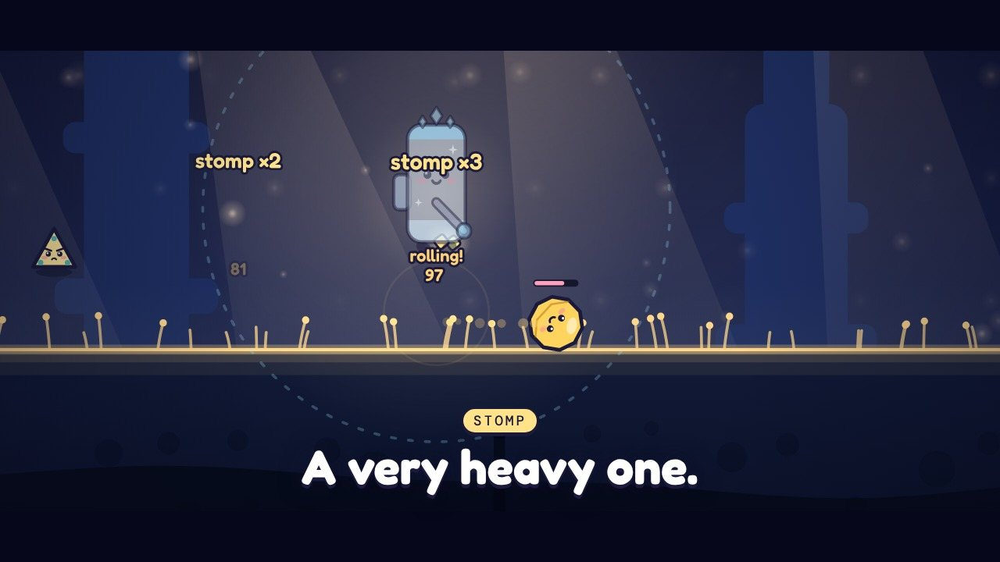
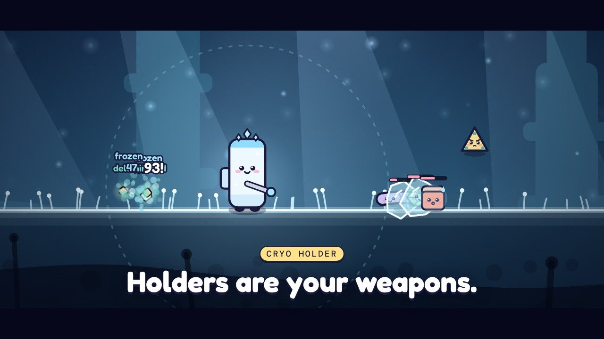
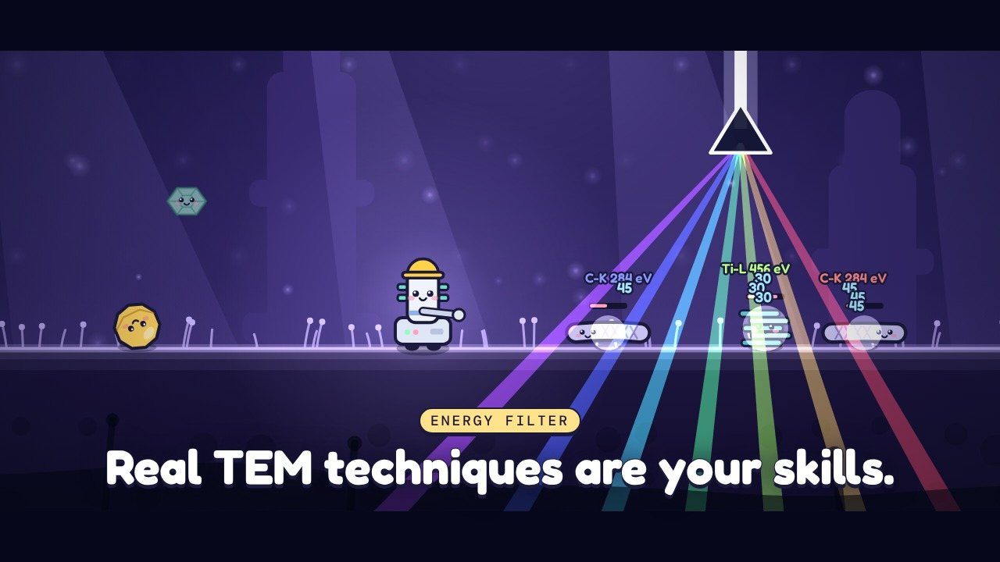
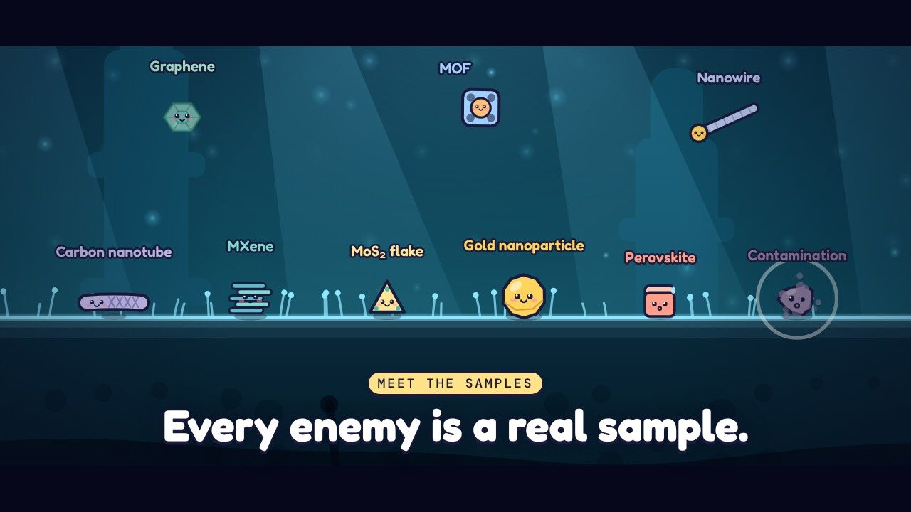
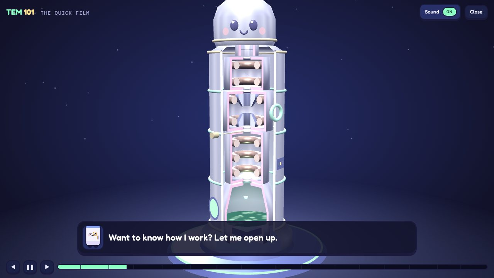
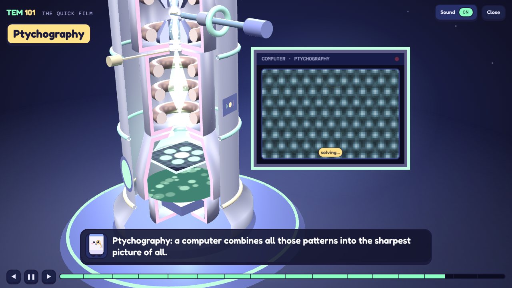
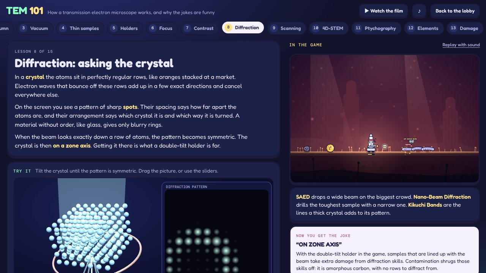

Spectre 900
The Boxed Aristocrat
+Lives in an enclosure: door slams never reach it
−Costs more than the building: levels need more data
You are the microscope. Survive your PhD.
A game from the (EM)² Lab · by Yang Yang
Beam Time is a cute side-scrolling platformer in which everything comes from a real microscopy lab. No background needed: if you have ever played a platformer, you can play this.

You play a transmission electron microscope, and a very heavy one: landing on a sample is an attack. Your health is the column's vacuum, and falling into a pit vents it.

The holder in your column fires by itself. Each one leaves its own mark on a sample, and swapping them goes through an airlock that leaks a little vacuum.

Learn twenty techniques at detector shrines and time them yourself. Each behaves like the real thing, more or less.

Samples behave like their materials: graphene is nearly invisible in bright field, perovskites fall apart under the beam, contamination grows. On Normal and Hard, they shoot back.
Every microscope has a perk and a flaw. Choose the one that suits how you play.
The Boxed Aristocrat
+Lives in an enclosure: door slams never reach it
−Costs more than the building: levels need more data
The Workhorse
+Four EDS detectors: picks up more data
−Shared facility: lab events last longer
The Ice Princess
+Always cold: freezing damage +50%
−Cryo cartridge only, and slowest on its feet
The Cold-FEG Samurai
+22% critical hits; a tip flash sends a shockwave
−No enclosure: every disturbance lasts twice as long
Old Reliable
+Roomy gap: holders hit harder and hardly leak
−Dim filament: skills are weaker
Triple Eye
+Three signals at once: every holder shot is tripled
−The dose is split: each hit lands at 55%
The UHV Hermit
+Fast, jumps high, skills recharge sooner
−Tiny holders hit softer, and its stomp is light
The 4D Native
+Born scanning: diffraction skills recharge sooner
−STEM only
All makers, microscopes, perks and flaws are invented for the game and describe no real instrument.
Nobody has made a 6D material yet. That is your first chapter. You have five years. Probably six.
Year 1
01
Holey carbon fields, and a single-tilt holder
02
Your slot: Tuesday, 2 am to 6 am
Year 2
03
Bring data. Any data.
04
Three hours, closed book
BossYear 3
05
Twelve hours of FIB for one lamella
06
A lamella that is definitely too thick
BossYear 4
07
48 hours on the good microscope
08
Reviewer #2 has entered the room
BossYear 5
09
Vitreous ice and a blank page
10
Forty slides, three professors
Final boss


TEM 101 explains the science behind every joke in the game, for anyone with high-school physics.
The microscope opens itself up and explains how it works, out loud: the gun, the vacuum, the lenses, the FIB, and what the camera sees.
Sliders, buttons and 3D models to turn, a live game window for each technique, and one quiz question per lesson.
Let students play a chapter or two, then open the matching TEM 101 lessons. The jokes become the questions.
It runs in any modern browser on lab computers, laptops, tablets and phones. No account, no download, no data collected.
Vacuum, airlocks, apertures, zone axes, dose, contamination: the ideas of a first TEM course, turned into things you do.
Free, in your browser, in about ten seconds.